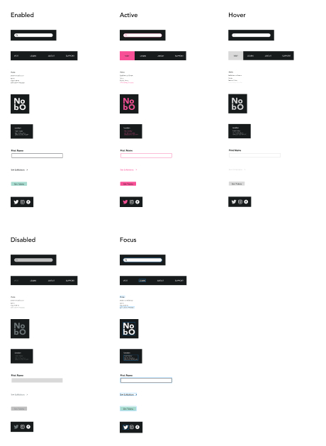

Nolan Boyd (NOBO), a 23-year-old Vancouver-based artist, navigates the intersection of art and design with boundless creativity. Armed with a Bachelor's in Fine Arts from UBC and currently pursuing a diploma in Interaction Design at Capilano University, Nolan engages his passion for art and creativity through all aspects of life, be it drawing, painting, writing music, cooking, and now design. Nolans diverse art portfolio spans Large acrylic works on canvas, pen and ink drawings, custom painted shoes and clothing, murals, digital art and animation. Now with a growing body of design work, Nolan navigates these projects with strengths in ideation, creativity, and an overall empathetic approach. Whether it be art or design, in every project, Nolan asks himself how to better connect people.
NOBO Gallery
NOBO Gallery is a fictional art gallery website based on the ideals of inspiring and connecting individuals, particularly youth, through art and creativity. With a focus on a bold, bright, and eye-catching design, the NOBO Gallery website engages the viewer immediately in a world of creativity that emulates the inspiring gallery experience they offer. This is a current school project that took place over the span of around two months. The creation of NOBO Gallery to the point it is at now, as refined mockups, was entirely a solo project done by Nolan Boyd.
Final Desktop Mockups
Here are the final desktop mockups, presenting the Home, Visit, and Learn pages of the website.
Final Mobile Mockups
Here are the final mobile mockups, presenting the Home, Visit, and Learn pages of the website.
Process
The process started with research on various gallery websites, ultimately selecting the Vancouver Art Gallery as a reference for website structure. Delving into their values and character, I crafted a mood board and checked colour contrast for the VAG. Next, I embarked on creating a new mood board, multiple colour contrast charts, and type scales, aligning them with the desired values and character for my own gallery website.
After the initial mood-board, preliminary colour and type choices have been made, I went on to creating rough wireframes. This was a quick process, really just focusing on finding the general layout for the Home, Visit, and Learn pages of both mobile and desktop.
Once the general layout was configured, I went into grey-box wireframes. This process allowed me to flesh out more of a final structure for all the necessary modules and components of both mobile and desktop, as well as figuring out some of the main text that would be included in the site.
After the grey-box wireframes were to my liking, I went in with colour, added images, and filled out any remaining filler text with real content. Below is the result of the first iteration of the full fidelity mockups for desktop.
After reviewing my first iteration of full-fidelity mock ups, I made some final tweaks to type-scales, colour, padding and margins, refined the look of some important modules, and created all states for interactive portions of the site.

Reflection
The process of creating NOBO gallery challenged my skills as a designer in many ways. I refined the process of taking a design from the research and conceptual phase, through to the final full-fidelity on my own. This process ingrained the importance of iterating, feedback, and acknowledging failures as learning lessons, and using them to help formulate a better path for your design.